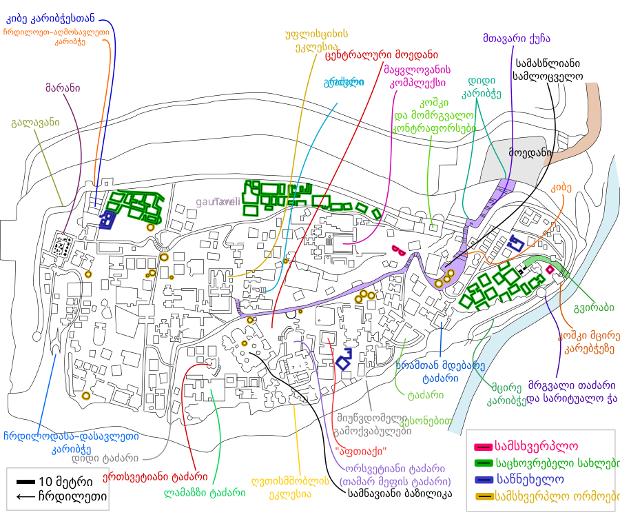

get to know georgia
უფლისციხე — კლდეში ნაკვეთი ქალაქი, კავკასიის ერთ-ერთი უძველესი დასახლება და საქალაქო ცენტრი. მდებარეობს ქ. გორის აღმოსავლეთით მე-10 კმ-ზე, მდინარე მტკვრის მარცხენა ნაპირას. 2006 წლის 7 ნოემბერს, საქართველოს პრეზიდენტის ბრძანებულების თანახმად მიენიჭა ეროვნული მნიშვნელობის კულტურის უძრავი ძეგლის კატეგორია[1].
წერილობით წყაროებში პირველად VII საუკუნეში იხსენიება. უფლისციხესა და მის შემოგარენში დაცულია არქეოლოგიურ და ხუროთმოძღვრულ ძეგლთა ჯგუფი, რომელთაგან უძველესი ადრინდელი ბრინჯაოს ხანისაა და მტკვარ-არაქსის კულტურის წრეს განეკუთვნება (ნამოსახლარები ლაშეთხევში, გუდაბერტყაზე, გორთან). შუა ბრინჯაოს ხანის მიწურულისაა ყათლანიხევის გორასამოსახლოს ქვედა ფენა.
.jpg)
უფლისციხის კლდეში ნაკვეთ ანსამბლსა და მის გარშემო დაჯგუფებულ დასახლებებს განვითარების გრძელი გზა გაუვლიათ. კლდეში ნაკვეთი დასახლება ჯერ უფლისციხის მიდამოებში მცხოვრები თემების ჰეგემონი თემის საცხოვრისი გამხდარა, შემდეგ კი - „ზენა სოფლის“ (შიდა ქართლის) ტომთა გაერთიანების ცენტრი, სადაც ამ გაერთიანების მეთაური (მამასახლისი), უფალი მჯდარა (აქედან სახელწოდება უფლისციხე). ადრინდელი ანტიკური ხანიდან (ძველი წელთაღრიცხვით VI-IV საუკუნეები) უფლისციხე ქალაქური ტიპის დასახლება იყო, რომელიც ადრინდელი ელინისტურ ხანაში (ძველი წელთაღრიცხვით IV საუკუნის დასასრულს - III საუკუნე) მსხვილ საქალაქო ცენტრად იქცა. ძველ კლდეში ნაკვეთი დასახლება კი ანტიკური ქალაქის შიდა ქალაქად ჩამოყალიბდა. IV საუკუნიდან უფლისციხე, ისევე როგორც ადრინდელი კლასობრივი ხანის ზოგიერთი სხვა ქალაქი, დაქვეითდა და მხოლოდ სამხრეთ სტრატეგიული მნიშვნელობა შერჩა. საქართველოს გაერთიანებისათვის ბრძოლის პერიოდში (IX-X საუკუნეები) დასუსტებული ციხე-ქალაქი უფლისციხე ხელიდან ხელში გადადიოდა. IX-X საუკუნეებში უფლისციხეში გაბატონებისათვის თავგამოდებით იბრძოდნენ ქართველი მეფეები, კახეთის მთავრები და სომხეთის მეფეები. საქართველოს პოლიტიკური გაერთიანების შემდეგ (X საუკუნის 70-იანი წლები) უფლისციხემ თანდათანობით დაკარგა მნიშვნელობა. ეს პროცესი დავით აღმაშენებლის მიერ 1122 თბილისის განთავისუფლებით დაგვირგვინდა.

უფლისციხის, როგორც სამხედრო სტრატეგიული პუნქტის, არსებობა მონღოლთა შემოსევების (XIII ს.) პერიოდში დამთავრდა. შემდგომში მას ახლომდებარე რაიონის მოსახლეობა მხოლოდ დროებით სახიზრად იყენებდა.
